ResQ Capsule
Compact emergency rescue device for vehicles designed in for life-saving preparedness.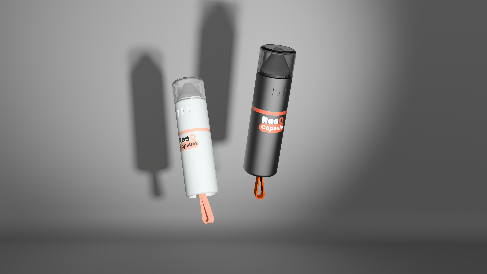
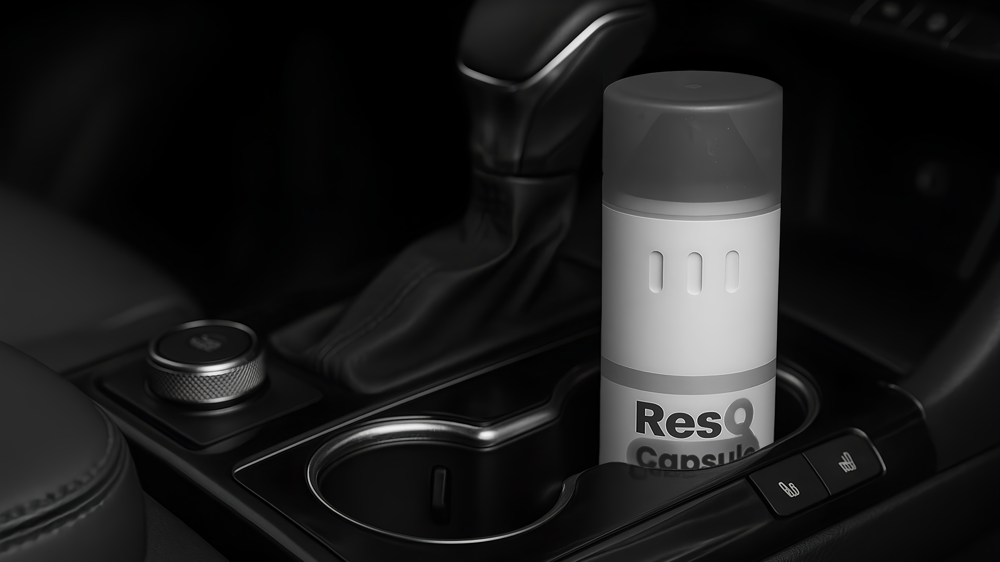
ResQ Capsule is a compact, all-in-one emergency escape tool designed to save lives while integrating seamlessly into people's daily driving routine. With its sleek capsule shape, it fits neatly into cup holders, door pockets, or even center consoles. It's designed in a way to always be accessible, and never intrusive.
I originally got the inspiration to make this product after seeing the window breakers that were being marketed online. I wanted to kind of attempt to make a design that would have more capabilities to ensure someone's safety in case of a car accident in the water. ResQ Capsule is designed with a deployable life bouy so that after you break into the water, the care still doesn't stop.
This was one of the times where I had to design for the inner mechanism in a sense. I did research on a lot of the parts I was going to include and had to make sure that the size of ResQ Capsule could fit it all while still maintaining compact. It took multiple iterations in order to make everything fit and retaining an aesthetically pleasing concept.
Selected Honors
- Winner in Safety Design | Design MasterPrize
- Winner in Industrial Product Design | European Product Design Awards
Software Used
- AutoDesk Inventor
- Adobe Photoshop
- Canva
Product Views
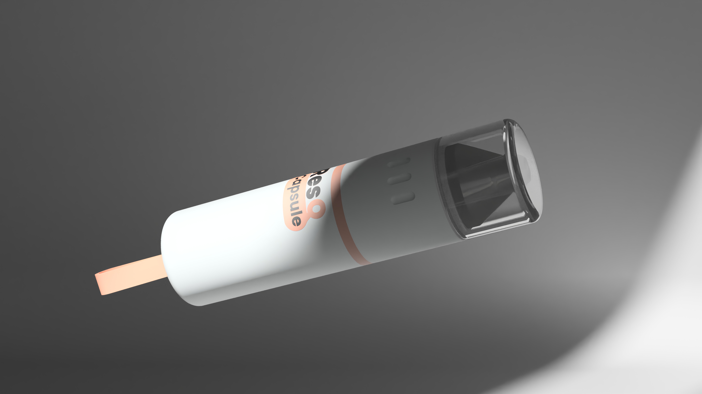
This depicts ResQ Capsule floating midair, with a shadow cutting across it, creating an visually appealing and aesthetic look to the product render. This was also my favorite render of ResQ Capsule that I did throughout; this was one of the first times I focused on lighting and shadows in a product render.
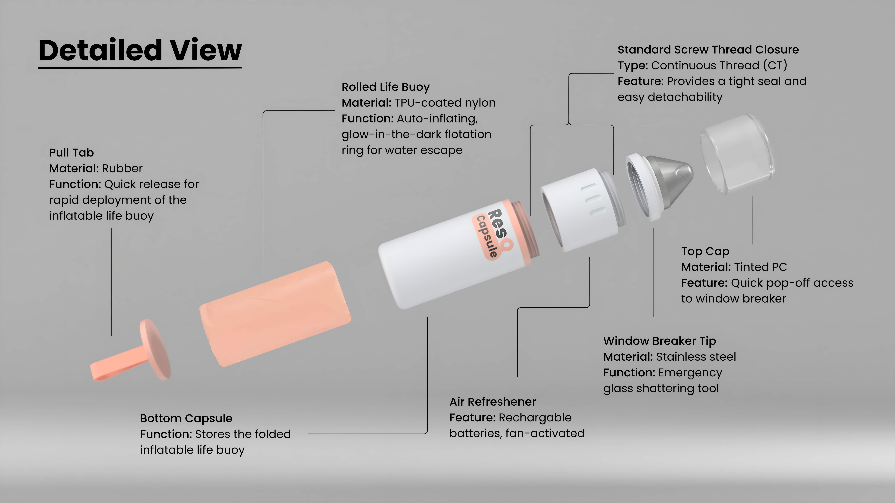
An expanded view of ResQ Capsule that goes into detail on the purpose of each section, material used, engineering method (if applicable), and also any features. The lines were used in order to help users pinpoint the specific sections being descibed.
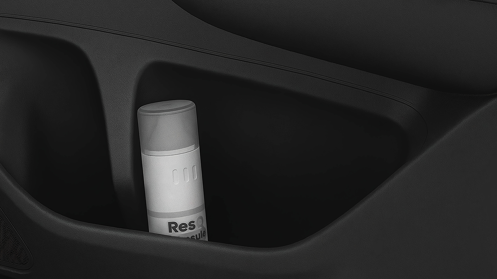
ResQ Capsule can be seen getting put into one of the car door pocket. This render helps highlight one of the locations where ResQ Capsule should be stored for the easiest access, and it also provides as a visual to help users gauge the size of the product.
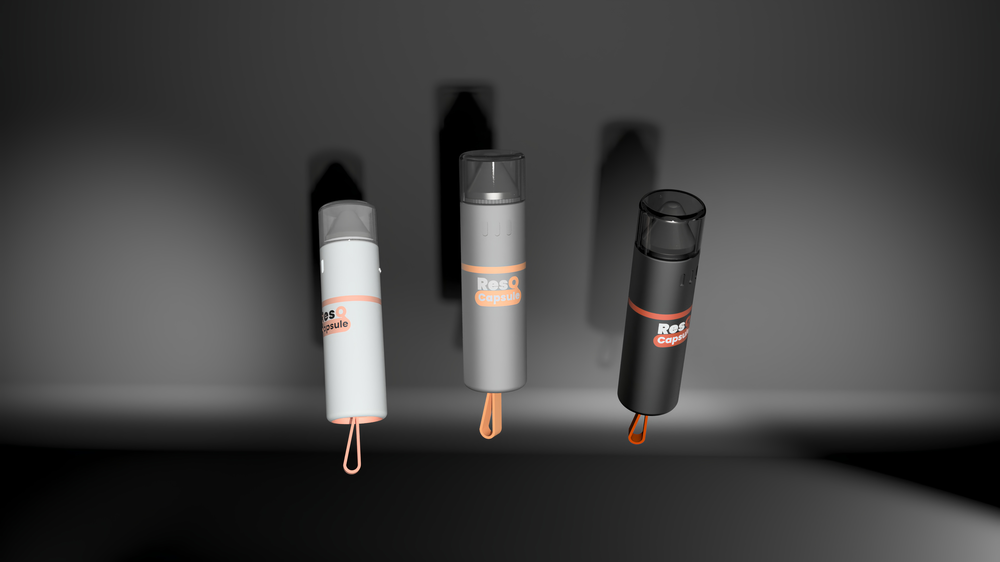
The render shows three different ResQ Capsules floating in the air, each with an unique color set including: white, grey, and black. The purpose of this render was made in order to introduce new colorsets that can be applied onto ResQ Capsule, showing that it can be accustomed to the user's personal preference.
FlexiBowl
3-in-1 tableware set with detachable handle and utensils, designed for convenience.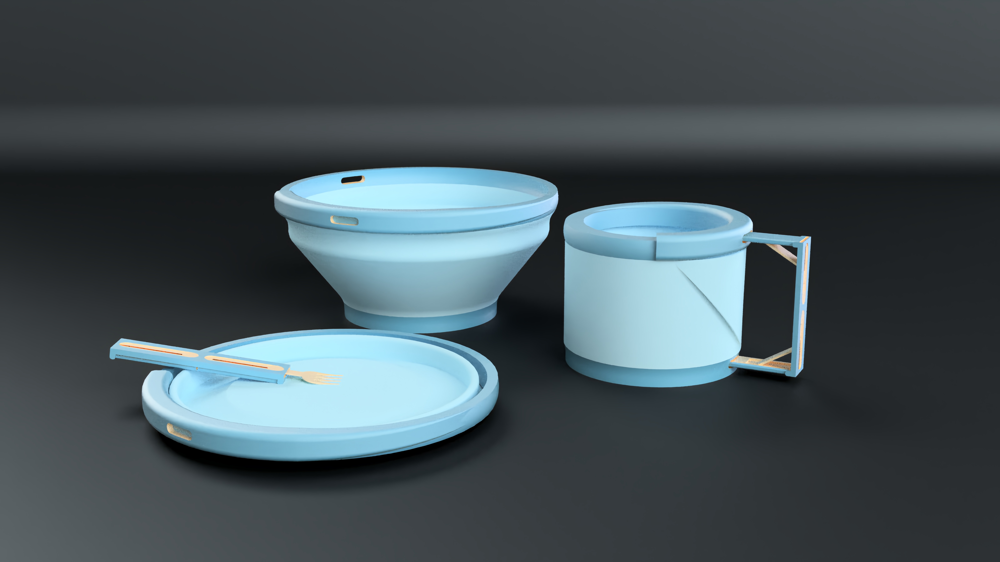
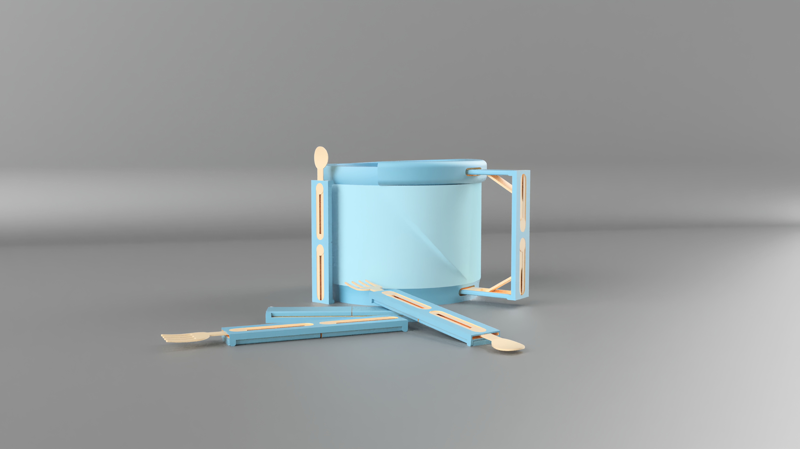
FlexiBowl is a conceptual modular dining product designed to adapt to diverse lifestyles. Functioning as a bowl, plate, or cup, FlexiBowl allows people to enjoy meals in various ways, whether you are on the road for a camping trip or at home by yourself.
The inspiration to create this came from one of my camping trips I was on with my family. I had to pack all the utensils and tableware by itself so a large amount of my bag space was taken up and not to mention it added a lot of heavy weight. However, throughout the trip I noticed how all the tableware did look similar in a case and I thought to try and combine them together to make something unique but at the same time convenient for everyone.
I really enjoyed the initial brainstorming phase of FlexiBowl and this was one of the times that I started to discover the limitless possibilities that come with. I learned a lot about iteration as welll, because making the mechanism to transform the bowl was really difficult for me and I was only able to accomplish it through many failed designs.
Selected Honors
- Gold and Best Sustainable Healthcare Innovation | World Front Design Award
- Home Interior - Tableware | NY Product Design Award
Software Used
- AutoDesk Inventor
- Canva
Product Views
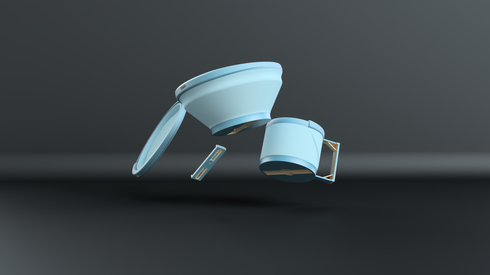
A render with all the different folding possibilties of FlexiBowl in the air, as well as the hidden utensil compartment underneath. This render was designed for users to have an aesthetic but simple look at all of FlexiBowl's functions and capabilities.
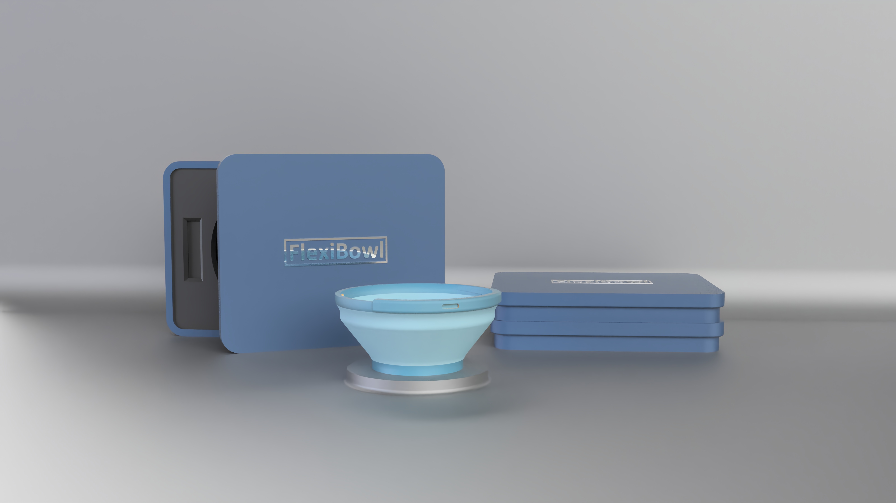
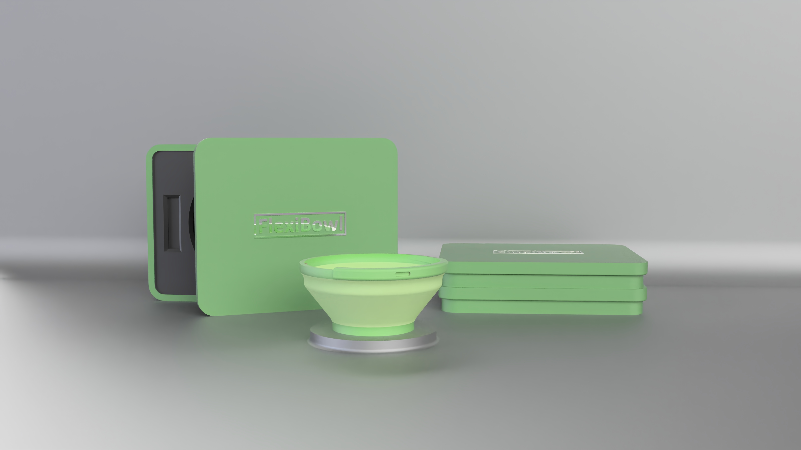
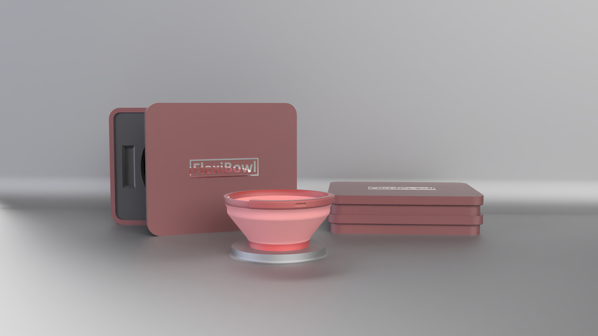
This displays a couple of different color options that are pushed out with FlexiBowl. All the color tones are designed to be light in order to be soothing to the eye and blend in naturally to the surroundings. It also features the simple, stackable packaging that FlexiBowl will come in.
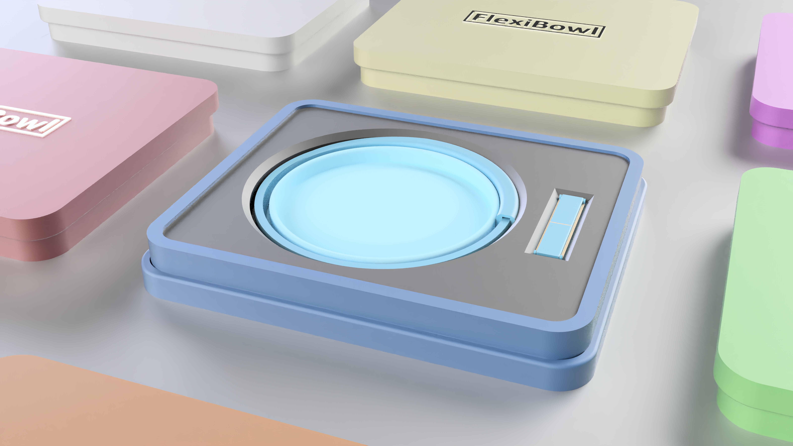
The snapshot displays more color options available for FlexiBowl, as well as a bunch of packaging put in a grid size layout. The closeup of an open packaging box shows how FlexiBowl will fit within the box, and the components that will be seperated.
Arborspira
An autonomous solar-powered drones designed to disperse biodegradable seeds and pollen.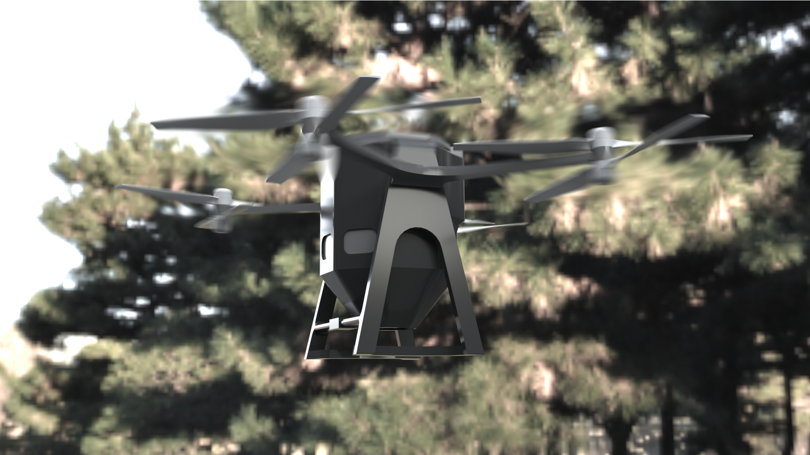
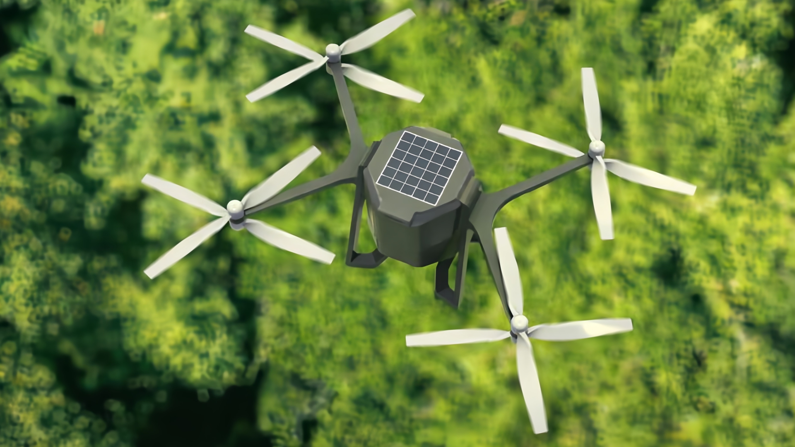
Arborspira is a drone that is built to be autnomous with extended flight time due to the aid of solar power. It disperses biodegradable (samara-inspired) seeds and pollen, with an electrostatic mechanism for pollen dispersion. It's designed to help rebuild forests, while promoting pollinator rebound.
In 2025, when the California wildfire struck and news stations all aroudn the world were reporting it, me and my team slowly started to realize the dangers of deforestation. Upon more research, we found that as deforestation increases, pollinator populations all throughout North America was rapidly declining to dangerous rates. This was the starting point of use making and designing Arborspira, in hopes of one day being launched to help the world recover it's greenery faster.
Since this was a team effort, we had to figure out how to distribute all the work throughout team members. I was the lead designer for Arborspira, so I designed all the renders, mockups, and the iterations of the drone model, while my teammates worked on finance and engineering. This project made me realize the importance of teamwork and how it made everything less stressful.
Selected Honors
- Conrad Innovator | Conrad Challenge
- Finalist | launchU Startup Challenge
Software Used
- Rhino 8
- AutoDesk Inventor
- Canva
Product Views
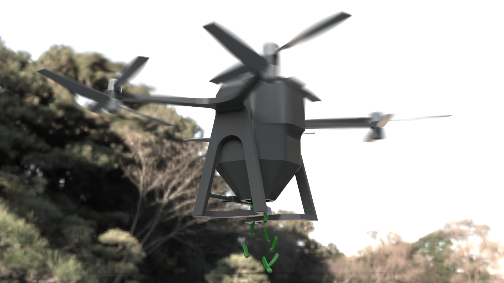
This shows Arborspira dropping our samara-inspired seed pods through the air. This render was intended to allow people to see a visual demonstration of how the drone would operate.
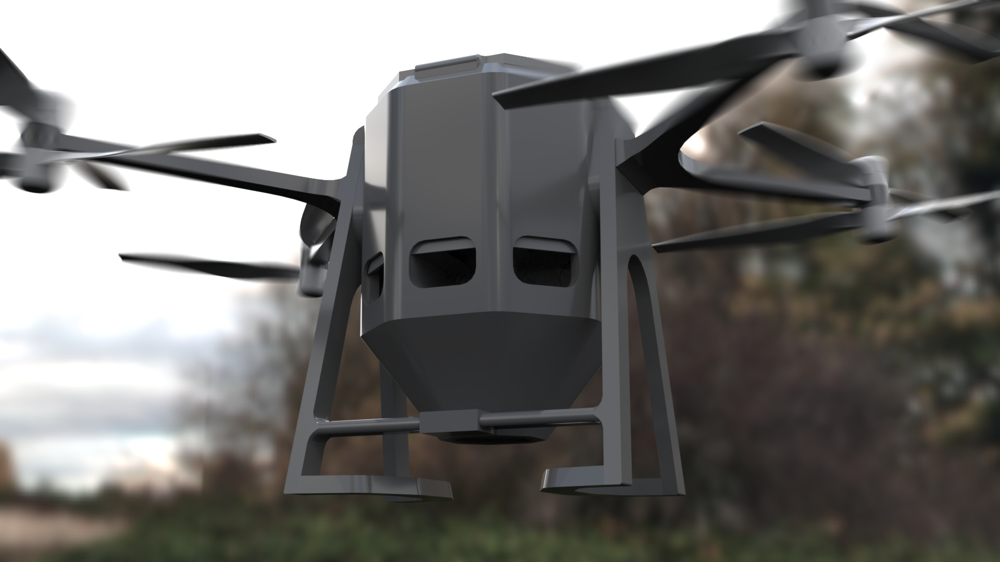
The back of Arborspira is shown with the doors of where the pollen will be stored opened. It gives a quick visual for how the pollen mechanism and doors would operate when the drone is in the air for missions.
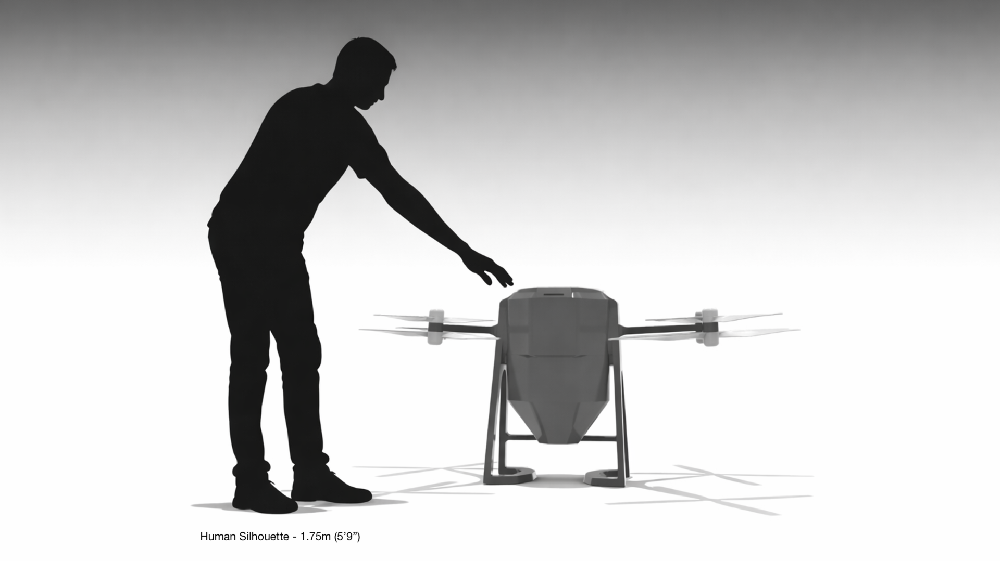
A human silhouette is positioned right next to Arborspira in order to allow people to be able to reference the size of the drone compared to themselves. This allows people to have a visual grasp on the demensions of Arborspira.
This is just a 360 view of Arborspira, so you can see all the orientations of the drone in a top manner. This was implemented in order to allow everyone to get a full picture of how Arborspira looks and the parts that are integrated within it.
Fluid-S
A chair crafted from upcycled oak and beech that was originally inspired by the human spine and sustainability.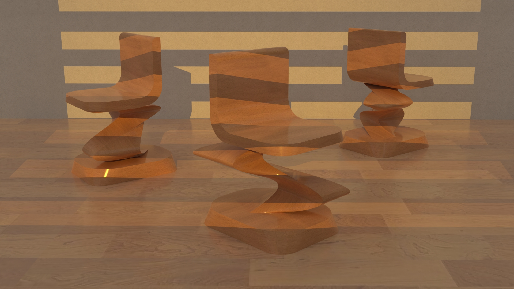
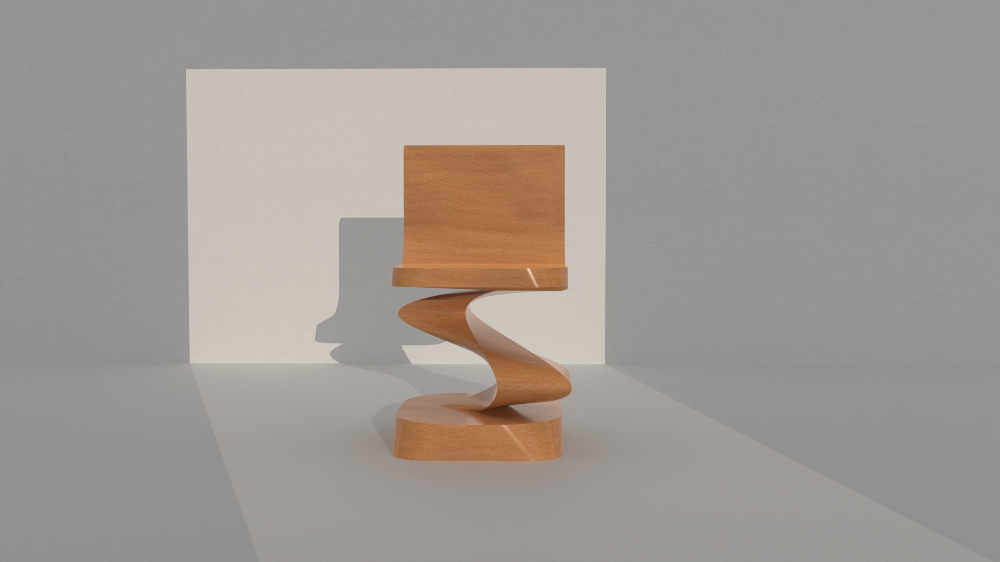
The S-shape of Fluid-S is symbolic of the curvature of a human spine, along with representing the "S" in sustainability. By being made out of upcycled oak and beech every single one of these chairs are supposed to highlight environmental concious design, while still functioning as a daily chair for everyone.
I originally was inspired to make a chair with curvatures similar to the human spine but the more I looked at it the more I saw how the letter "S" would emerge. So then, I decided to give the chair a double meaning, and one of the most uprising issues in today's world was eco-friendly design, so I thought why not integrate it with that. After further research, I found out that a lot of furniture started to use upcycled wood in order to limit the amount of new trees that are being cut down.
This was the first design that had such a complex shape to it, so I spent a lot of time trying to figure out how to make the "S" design without having intersecting objects. It was also pretty difficult for me as Fluid-S was one of my very first project on Rhino when I just started fimiliar into it, but it taught me a lot about lighting and placement of the object during renders.
Selected Honors
- Silver in furnishings | un Design Award
- Bronze in Home | Wonder Global Design Awards
Software Used
- Rhino 8
- Adobe Photoshop
Product Views
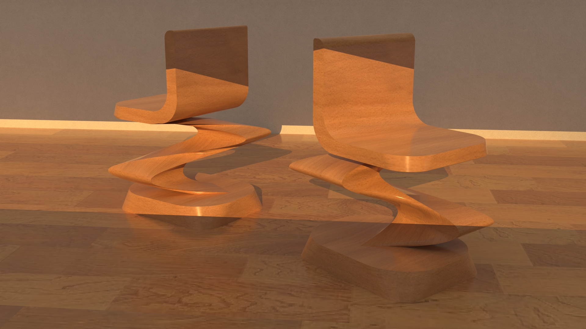
There are 2 chairs placed back to back inside a room that is pretty simple with wooden flooring. The sunset effect is casted upon the chairs in order to enhance the effects of the wood carvings done to Fluid-S. The sunset color tone was chosen in order to give a soothing visual to the scene.
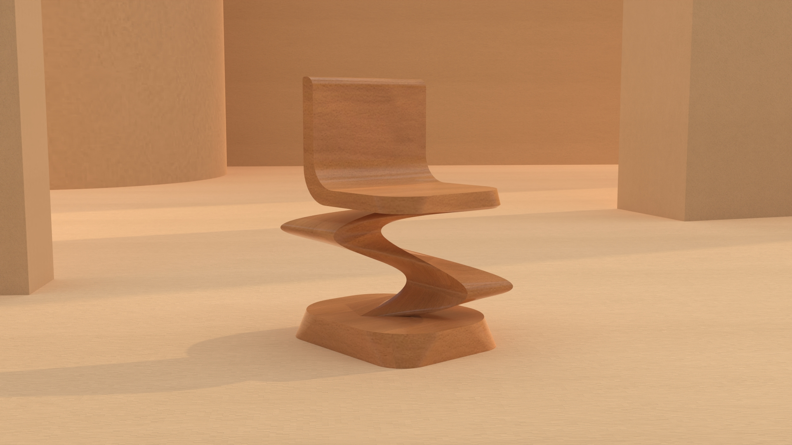
A simple and clean render of Fluid-S with some different shaped walls in the background. This was done in order to showcase the curvature of the chair especially the "S" shape that is made.
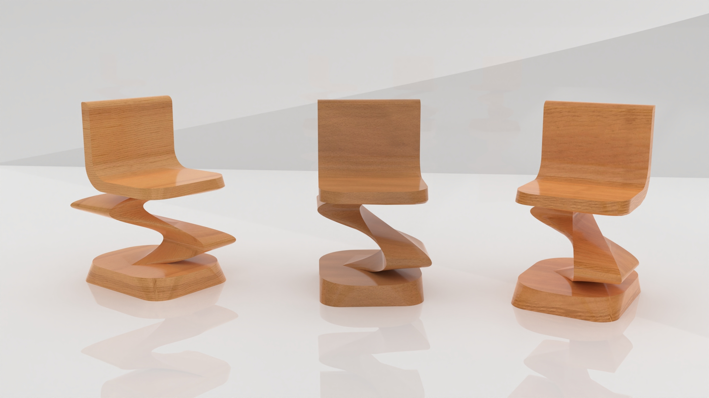
3 different types of color tone chairs are displayed on a glossy reflective surface. It gives off a very modern look as well as highlighting the potiential colors that may be available for Fluid-S. The render also plays a lot with lighting and reflections since it's more of a shiny surface, a lot of light will bounce off and give different effects.
Connection Executor 9600X (RobotDog)
A 9-servo robot dog that can roam around autonomously, utilizing an ultrasonic sensor to avoid obstacles.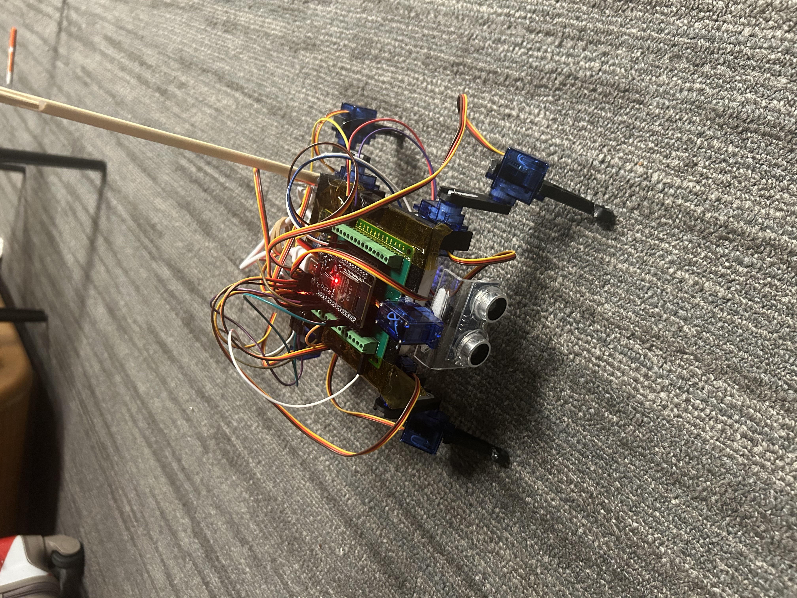
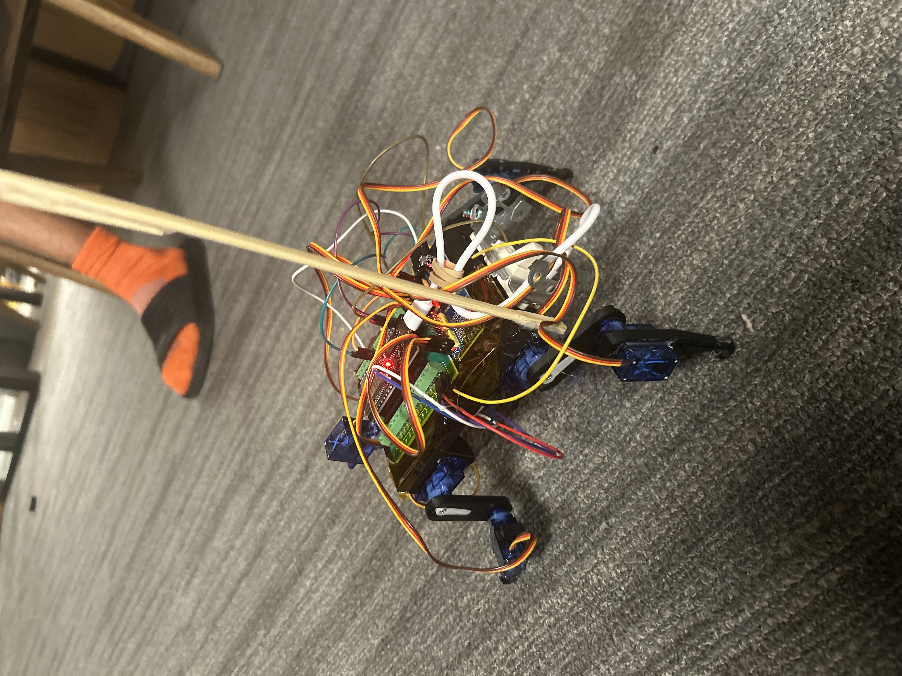
This was a project built for a 4 day hardware hackathon called "Stasis". It features a robotdog that uses 8 servo motors and inverse kinematics in order to replicate 4-legged movement. Another servo motor is attached to an ultrasonic sensor to act as the head for the robodog and detect incoming obstacles. A light switch (for the special ingredient) is present in the back of the robot to act as a quick on/off switch. There are 2 separate modes for the robot dog, one that you can manually control movement through the console, and another one where the robot dog will walk autonomously.
My team and I thought of making this robot dog because we wanted to challenge our own skills, while venturing into the "still-new" field of robotics for us. For a unique twist we attached a flag to the back of the robot dog that featured our socials, so it can roam around the venue and attract attention from fellow participants.
Majority of the time I worked on creating the 3D printed frames for our robot dog, as well as wiring all the components up while retaining wire management. I also took part in coding the inverse kinematics for both modes of the robot dog. I learned to apply continuous iterations to the custom designed robot dog frame and make tradeoffs between "ideal" building decisions compared to most realistic ones due to the time constraint given.
Materials Used
- Servo Motors
- ESP-32
- Ultrasonic Sensor
- Servo Driver (16 Channel)
- 5V Portable Battery
- 8 Ohms Circular Speaker
- Audio Amplifier Board
- Jumper Wires
- Light Switch
Design Process
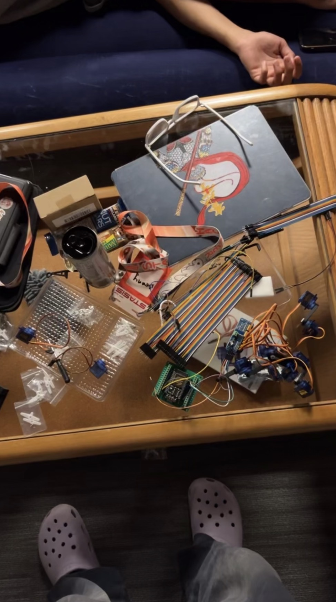
Before we started building the robot dog, we conducted diagnostic testing to ensure all components were functioning correctly. We also used this time to start coding and pushing our firmware to the servo motors (that had legs already attached so we could work on inverse kinematics).
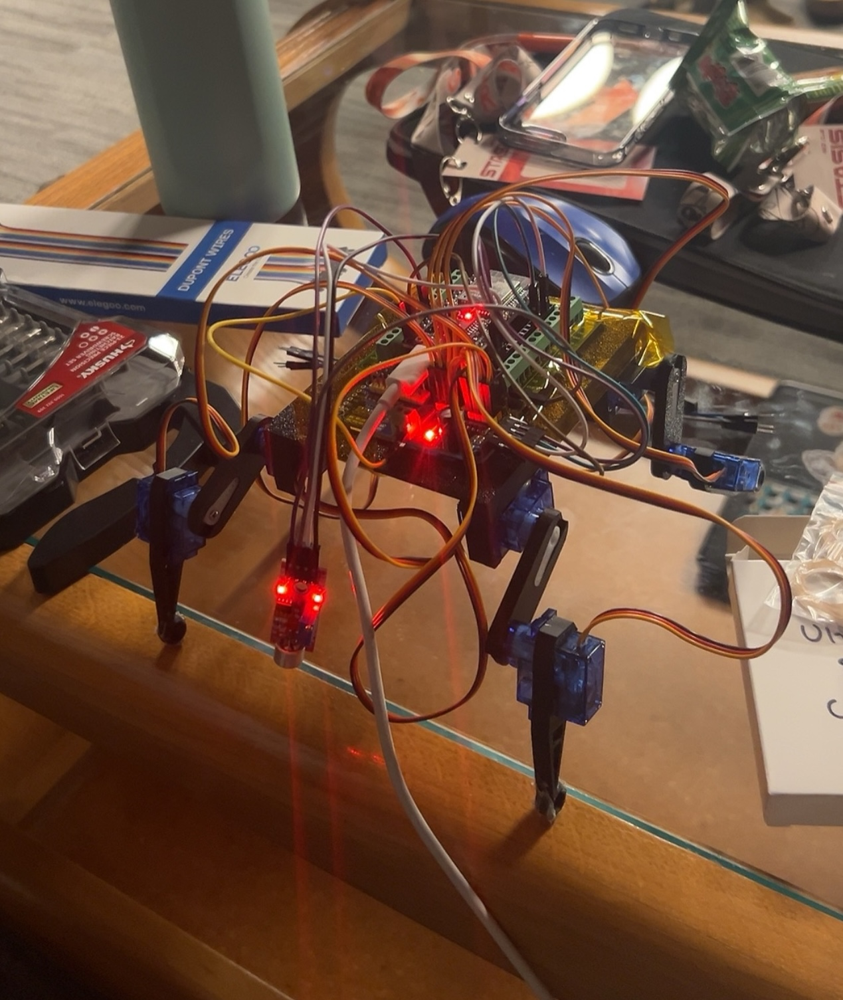
Once all components were tested, we began the assembly process. This involved carefully connecting each part and ensuring everything was aligned properly. We were optimizing more to get the basic functions working instead of trying to have an extensive approach on wire and build management.
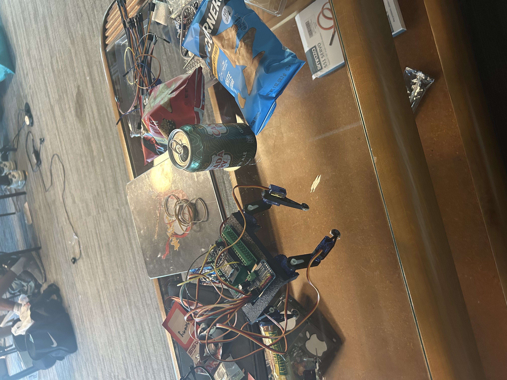
After a couple of test runs, we had to reassemble certain parts to improve performance and address any issues that arose. Especially with the servo motors and ensuring that they were melted into the 3D printed legs in order to maximize grip. We also began to test the ultrasonic sensor for obstacle detection.
After more extensive testing and the implementation of the ultrasonic sensor addition, we were finally able to get the robot dog to freely move around. We attached a 5V portable battery at the bottom of the frame in order for it to roam autonmously.
RoboArm
A 2 jointed robot arm that is able to be controlled wireless through a smartphone.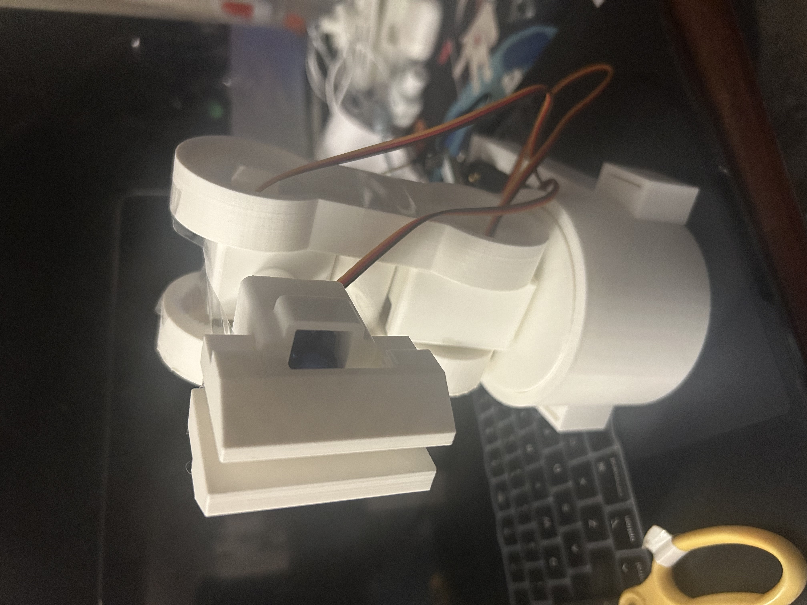
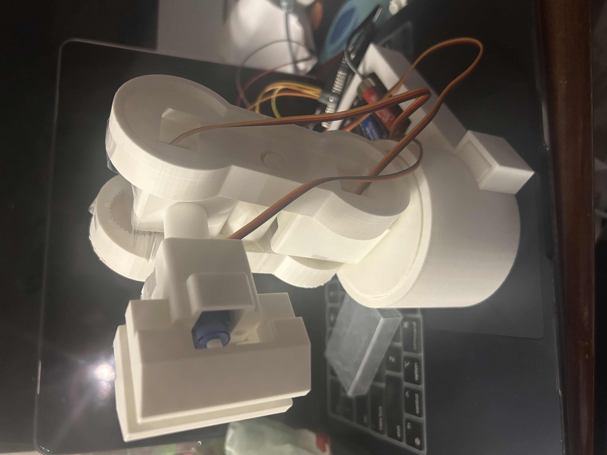
RoboArm is a robotic arm that has 2 movable joints, a base that is capable of horizontal movement, and a gripper that's able to open and close. The design for RoboArm, including the gears, are all custom made and 3D printed by me on AutoDesk Inventor. There are small cuts and indents in order to help with wiring space throughout the design.
This was one of the first robotics projects that I did completely on my own without the assistance of anyone else. It was pretty challenging trying to make gears from scratch and ensure all the tolerances would function as intended. It took a lot of trial-and-error especially since each 3D print would come out a little different.
Throughout this project I learned how to design specifically for manufacturing tolerance because it was completely different then the tolerance shown in the 3D model application. Additionally, I experienced what it felt to build alone, having only myself to rely on even during rough times when let's say the servo motor movement wasn't as intended. It taught me a lot about resilience and grit, just pushing through with the final goal in mind.
Materials Used
- Servo Motors SG90
- Ball Bearings
- ESP-32
- AA Batteries
- 4 AA Battery Holder
- Jumper Wires
- DC Barrel Jack to Screen Adapter
Progress Photos
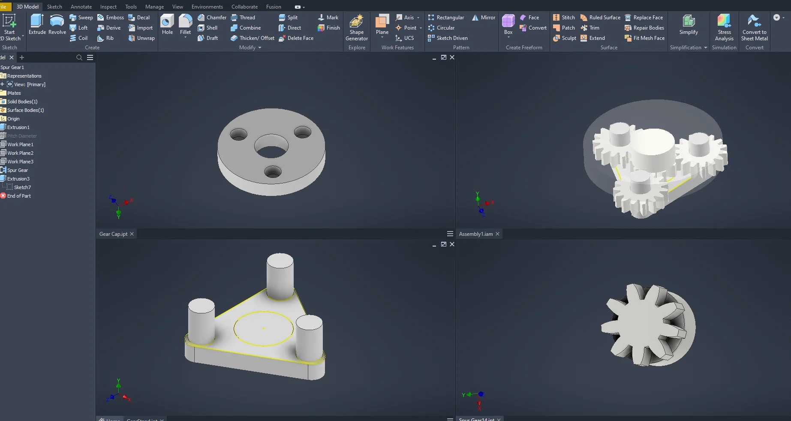
Before starting on the overall design of the robot arm, I decided to make an unique set of rotational gears that would be implemented all throughout the joints. Through this system, whenever the servo motor is moving the robot arm wouldn't have a very violent motion, instead it would maintain a slow and steady pace.
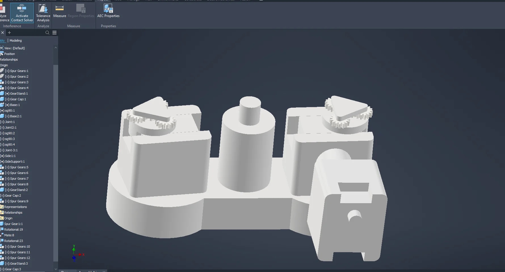
After finishing the design for the holders of the servo motor for the joints of the robot arm, I moved everything into an assembly file in order to see how everything attaches. This was just a rough measurement for the entire arm, so I knew how to scale the base and got the first looks of a completed project.
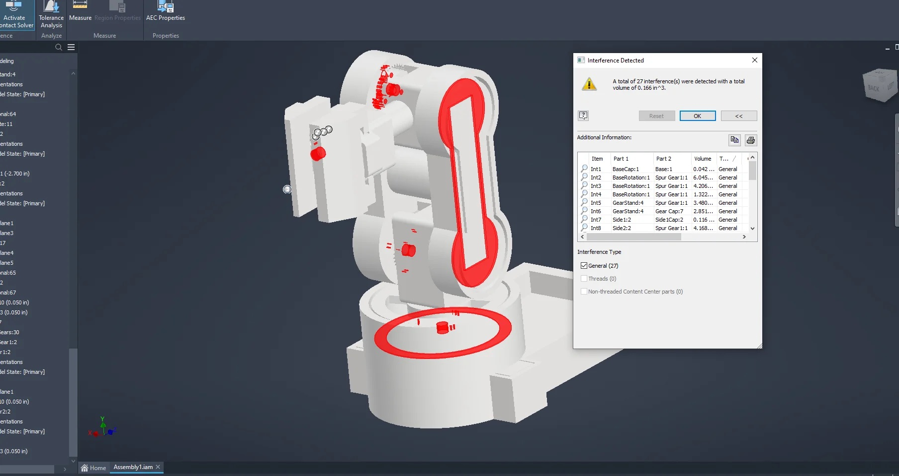
After pretty much finishing the design for the entire robotic arm, I had to check for all the interferences that would occur and debug them as they would prevent the arm from functioning properly. At this point, I was just going back and forth editing the parts to ensure there were no interference present.
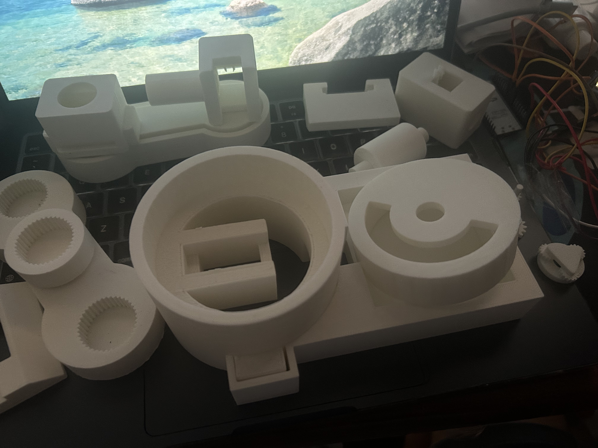
After 3D printing out all the seperate parts I had to connect them one by one in order to ensure there weren't any misalignment during the printing process. If there were any mistakes either I would reprint the same file or tweak the part and reprint it again. I also started testing all the electronic components in order to ensure it worked well with the firmware.
Squirrel Plex
A squirrel house designed to maximize comfortable living space while shielding squirrels from harsh environments.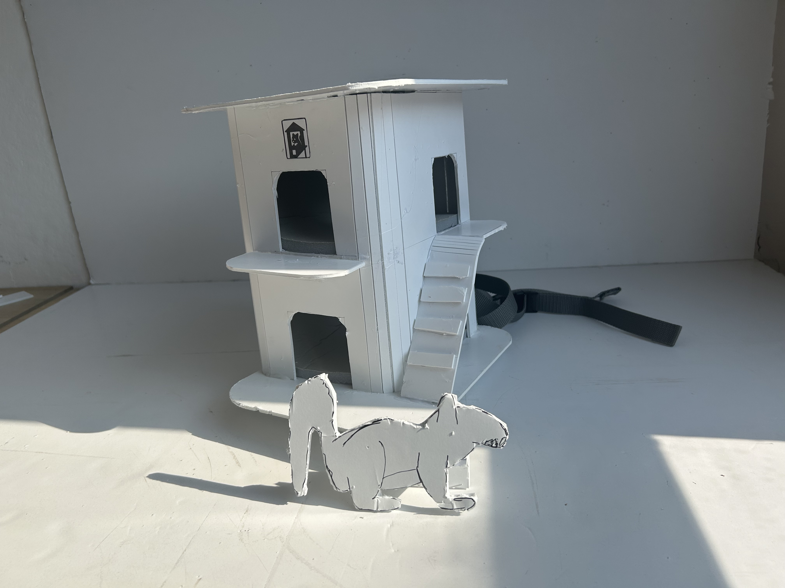
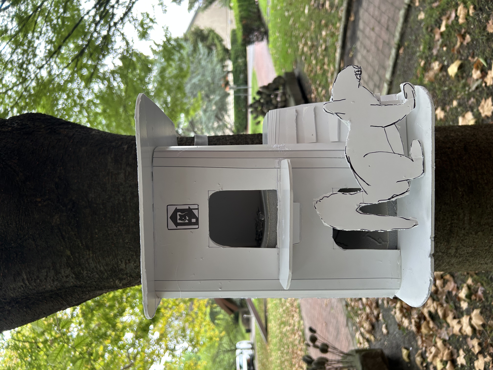
Squirrel Plex is basically a squirrel house that was inspired by modern apartment buildings, hence the two story build. The overall goal of it is to give squirrels access to essentially shelter whether it's during bad weather or for normal sleeping. It's made specifically for squirrels so they are able to utilize it however they want without the intervention of any devices, through a buckel strap mechanism that holds Squirrel Plex onto a tree trunch securely.
My initial idea was to make a simple birdhouse but after seeing the vast amounts of birdhouses around the neighborhood, I started to brainstorm what other animals would be able to stay in a shelter. Then, that's when it hit me and I decided to make some sort of house designed just for squirrels because you rarely see that type of house anywhere, so I thought out to try to design one.
This project it taught me a lot about physical product design, as I started out with an idea and tried to implement it into cardboard. It was very hands-on, which I really loved, but it took a large amount of time to build the concept and ensuring for example the demensions of the wall were cut correctly.
Materials Used
- Cardboard
- Foamcore
- Gatorboard
- Foam
- Buckle Strap
Project Views
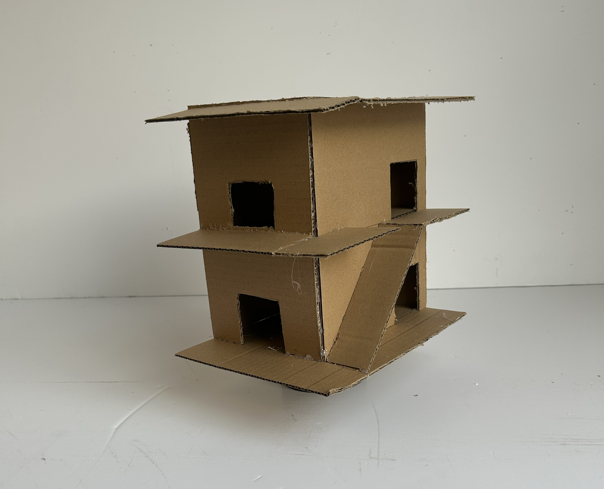
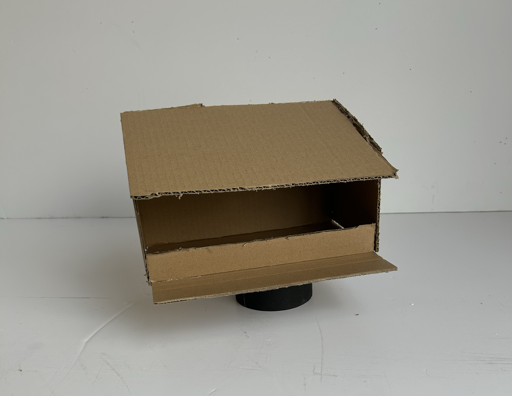
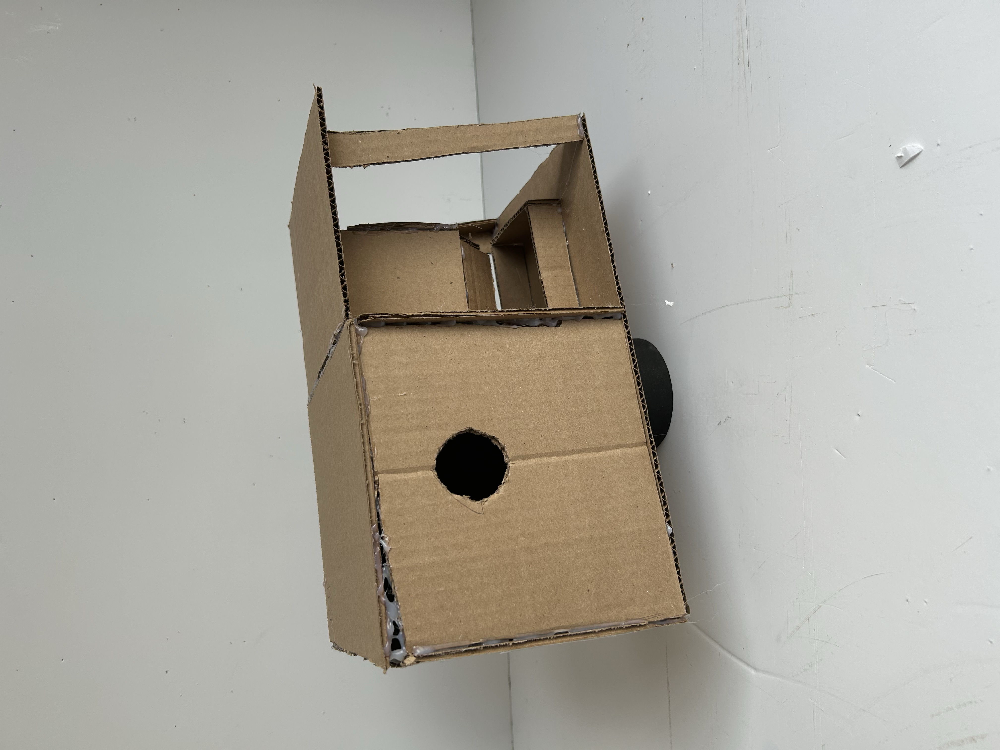
These 3 cardboard designs where my initial ideas for what I wanted my squirrel house to look like. They were essentially quick ideas that I built pretty fast in order to get a sense of how everything would look. The ideas being made into a physical setting really helped me visualize the flaws and highlights of each design, which really helped me to narrow down my best piece.
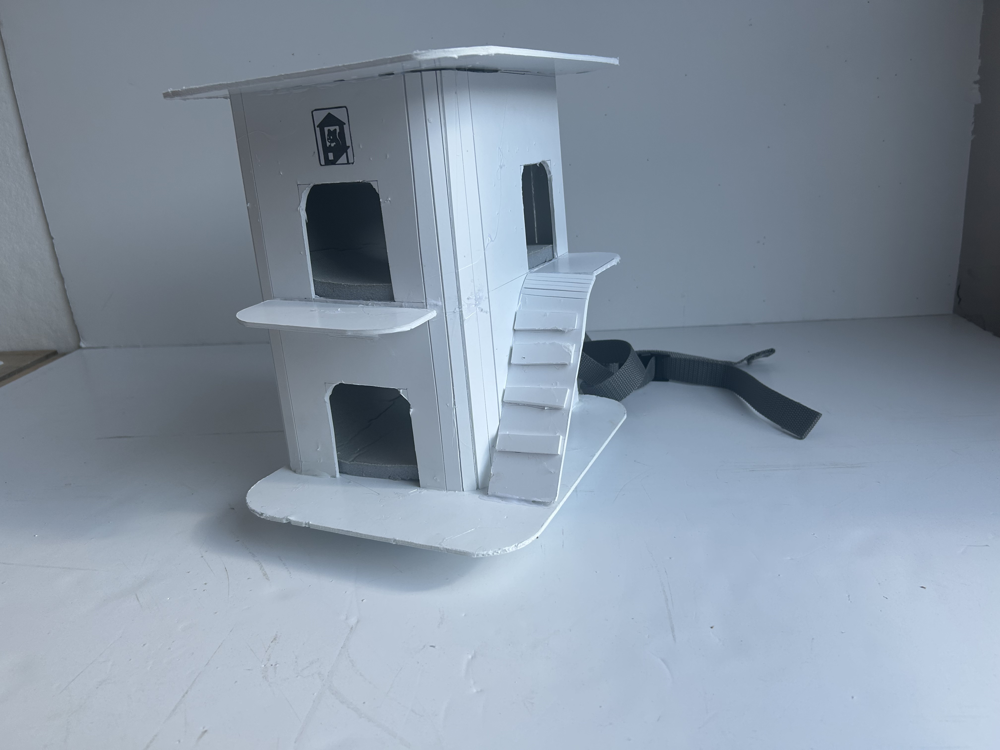
So after deciding which one of the 3 cardboard inital design I wanted to go with, I used a mix of sturdy materials, like gatorboard and foamcore, in order to buid out the design. I used those specific materials since they promoted sturdy surfaces that were still versatile when slightly cut to form curves.
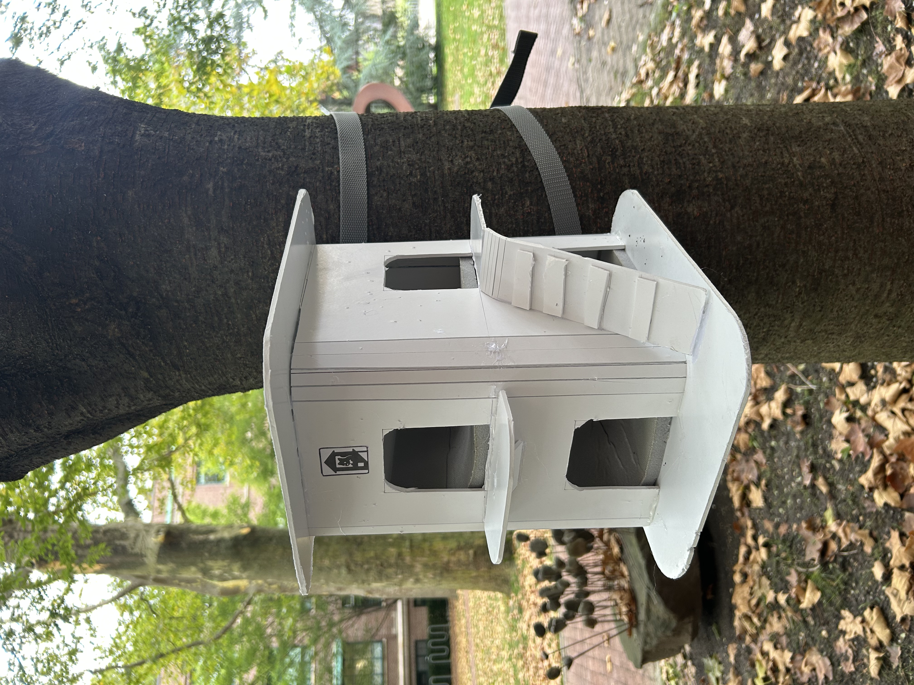
After finishing the build for the final design, I decided to test it out by actually attaching it onto a tree trunk in a local park. Suprisingly, it was very sturdy and Squirrel Plex stayed up right like it's supposed to be, so I was very happy with the outcome.
Sylform Light
A nature-inspired light that is designed to feel modern and sleek.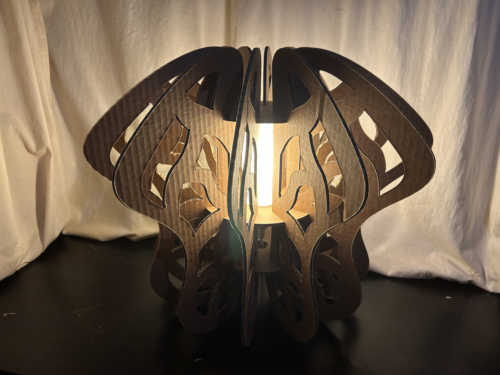
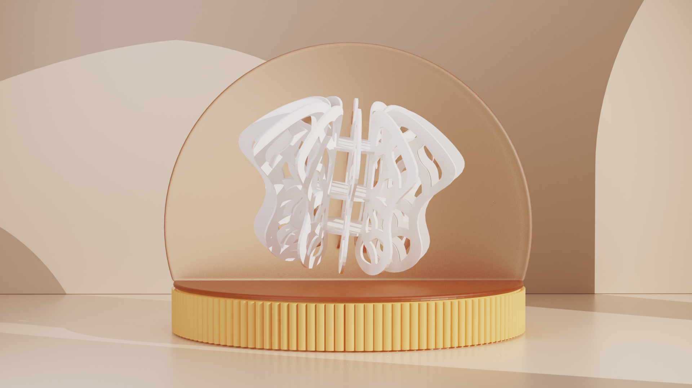
This is a light that was orginally inspired by the complex but patterned designs branches seemed to give off in nature. This light tries to replicate that along with tweaking the exterior of the light in order to feel modern and fit into today's sleek design feel.
I always looked upon the natural world around us as inspiration or just ideas for design and I got the idea to make this sort of light when I was running through a local park in the morning. The branches and the sun aligned in a way it gave a really unique shadow on the floor but still managed to brighten up the path, and ever since then I tried to recreate a similar feeling.
For the individual cardboard panels of the light I made them through Adobe Illustrator and had them cut out through a Zund Cutter. It was my first time really doing an assembly design where the panels would be made by a machine so it was a new experience for me. I also learned a lot about lighting design through this project, and it introduced to me a whole new field of design.
Materials Used
- Vellum Paper
- Cardboard
- Light Bulb
Project Views
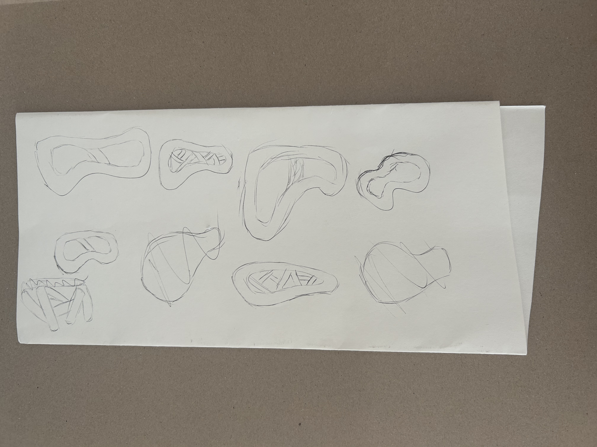
Before I settled on a single design for the light, I tried to brainstorm by sketching a bunch of different shaped panels that I may have wanted. This helped me to start visualizing how they would look when composed all around.
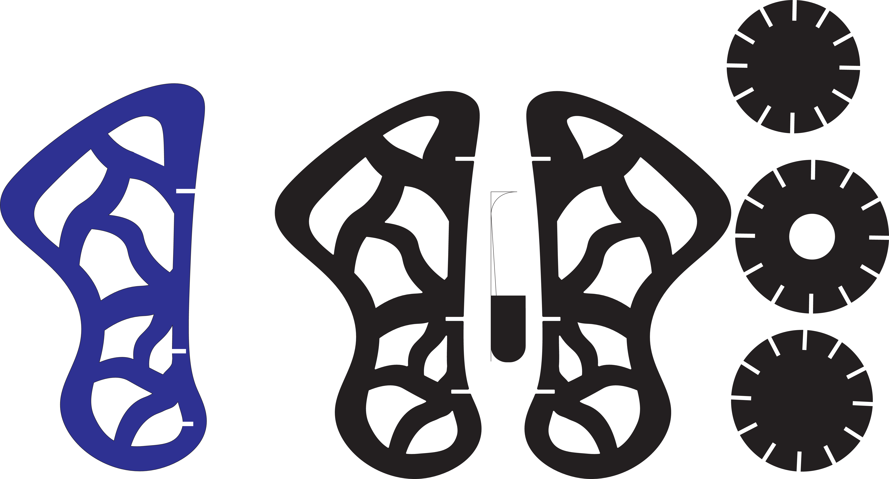
After I found my most favorite sketch of a panel, I worked on implementing it onto Adobe Illustrator so than I could export it as a .svg file and print it using a Zund Cutter. On Illustrator I had to make sure that I set everything correctly where I would be able to attach the light all around and also design holes for the light bulb to go through.
After waiting to get all the cardboard pieces to be cut out I was finally able to attach everything together and make it work. At first, I didn't use any vellum paper but I wanted to basically let the light glow more vibrant so I used it to give off that certian effect.
DesignOS
Custom-coded portfolio with the intent of functioning as a desktop OS right on any web browser.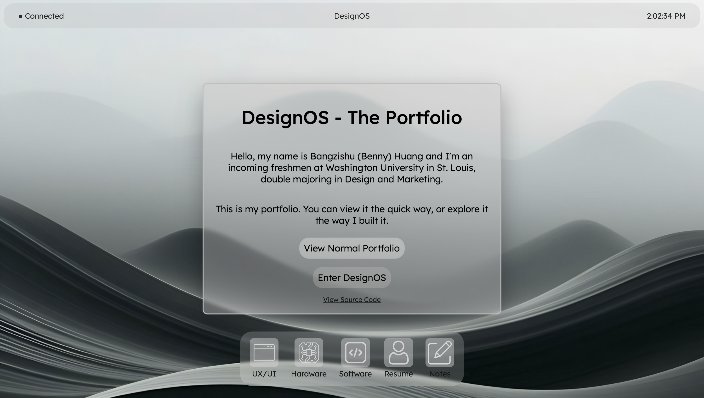
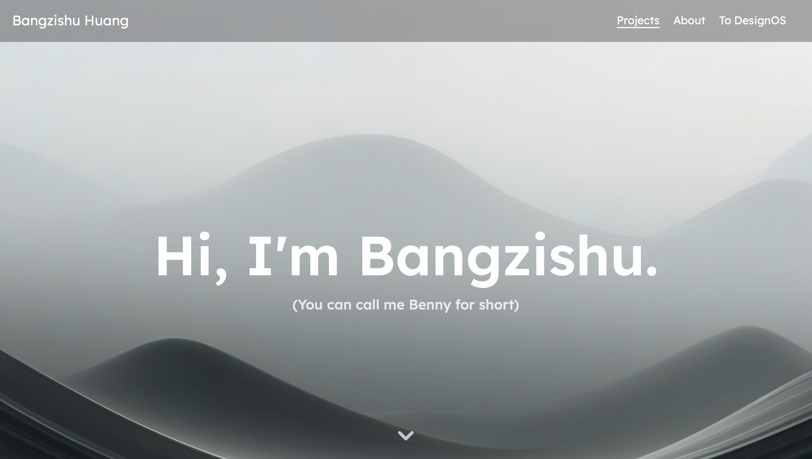
I originally thought of the idea to build DesignOS because I realized how majority of the portfolio sites are all generated from generic website builders. In a world of talented designers, I wanted to make a portfolio that would leave a lasting impression on everyone who came across it. So, here I am building DesignOS, and trying to make this a reality. It essentially acts as an operating system functioning on any web browser with the "apps" displaying a variety of my projects and things about me.
In order for the entire interface to feel like an actual OS, I made sure to add Z-Indexing, which is basically organizing windows into specific layers (so the most recently clicked window is at the very top). Also, I implemented a bunch of mini animations when your cursor is hovered to give off a very minimalistic but sleek feel. There are a lot of subtle transition details I added that would make the entire OS experience feel more premium.
When I first started this project I was still pretty new to JavaScript and HTML, so through creating DesignOS I also became more efficient with the languages. It also taught me to think outside the box for a lot of problems, especially since I created this portfolio because I wanted to somehow differentiate myself. I truly enjoyed working on DesignOS, since I was able to express myself through this OS with all the elements and projects present.
Tech Stack
- Frontend: JavaScript, HTML, CSS
- Hosting: GitHub Pages
- Version Control: GitHub
- Development Tools: Visual Studio Code, Live Server Extension
Key Features
Each window of the OS can be dragged through the title bar and brought to the front upon clicking through a shared z-index counter. I wanted to make sure that the OS felt like an actual operating system, so I implemented this feature to make it feel more realistic rather than just a simple web page.
Throughout the OS, I implemented various subtle animations to enhance the user experience. These include smooth transitions when opening and closing windows, as well as hover effects on interactive elements.
DesignOS features a dual portfolio system, allowing users to explore my work in both the OS and traditional portfolio views. This allows the portfolio to accomodate users with different preferences and needs.
Where Stars Used to Sing
A narrative-driven game exploring the quiet beauty of the world that we tend to forget as we grow older.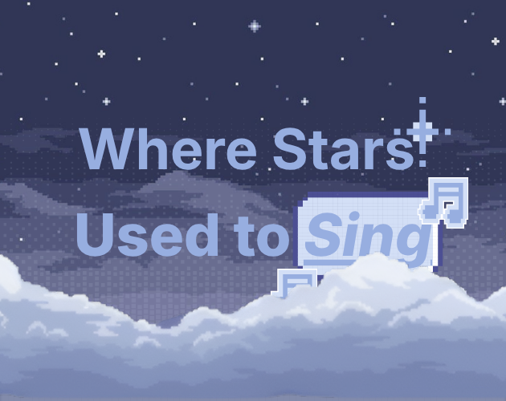
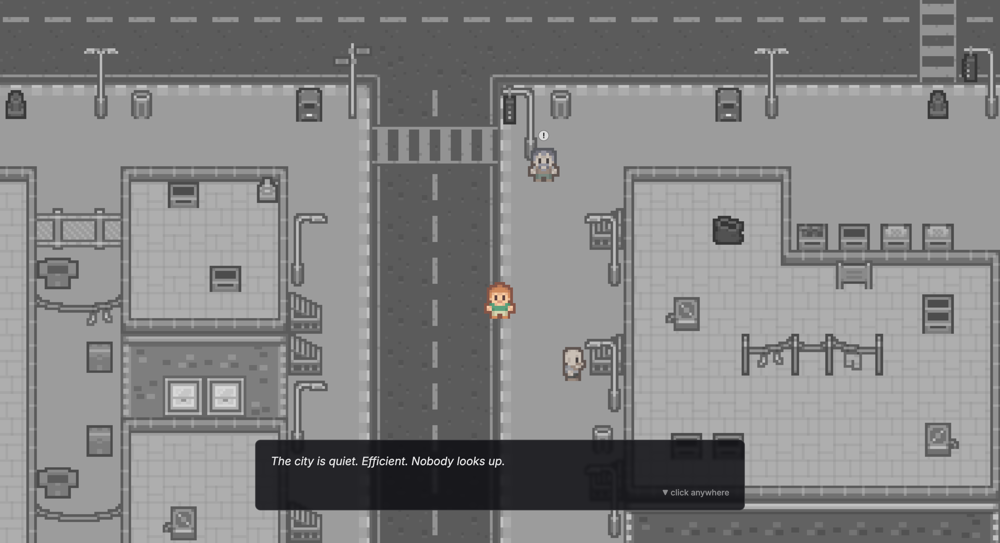
The idea to create Where Stars Used to Sing came from when I was participating in GMTK 2026, the largest 4 day game jam on itch.io. The theme for the year was "Countdown", and after much brainstorming I wanted to interpret it in an unique sense so I created this narrative-driven game. The entire game essentially explores the concept of time and memory, showing that as we grow older, the world around us becomes more structured and less magical.
Throughout the game, I had to ensure that the narrative elements were well-integrated with the gameplay mechanics. There was a lot of "learning while I build" incoporated throuhgout the development process due to my more newer interactions with game developemnt.
Since I built the game alone, I was able to learn a lot about game design and storytelling. At the end of the game jam, I did realize that there were still a couple of bugs and movement issues present, showing that I have much more to learn. This was an amazing experience for me and it allowed me to become a way better developer through learning new techniques and recognizing my strengths and weaknesses.
Recognitions
- Top 1% for Popularity | GMTK Game Jam 2026
- Top 4% for Narrative | GMTK Game Jam 2026
Tech Stack
- Game Engine: Custom 2D Engine (Vanilla JavaScript)
- Frontend: JavaScript, HTML, CSS
- Asset Creation: Sprite Fusion
- Hosting: Itch.io
- Version Control: GitHub
- Development Tools: Visual Studio Code, Live Server Extension
Key Moments
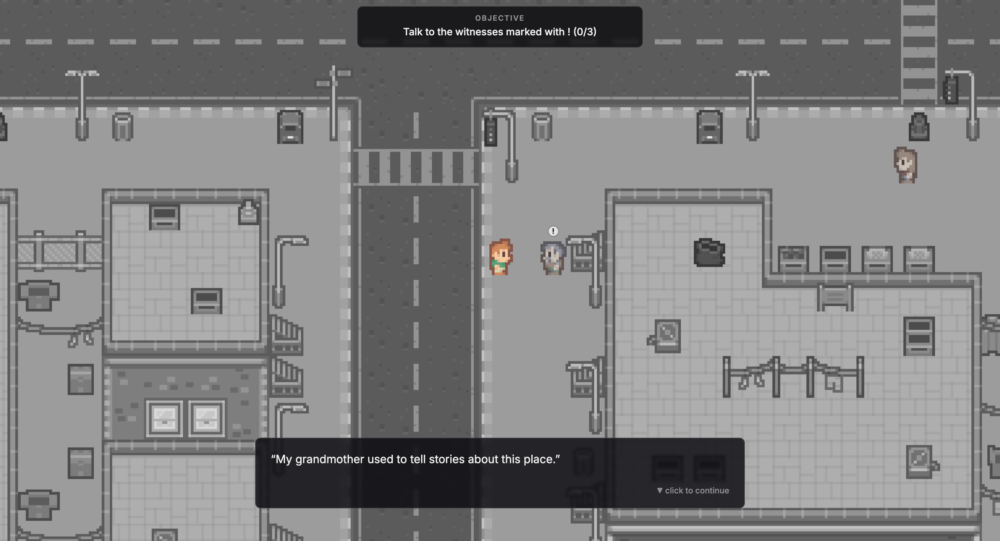
The dialogue system was designed to create an immersive storytelling experinece, where random NPCs would be able to interact with the player in meaningful ways. This made the game feel much more alive and engaging for users.
The pixel blocking feature was implemented to create a more authentic retro gaming experience, ensuring that sprites and backgrounds interacted properly. I had to ensure that stationary objects such as buildings or trees would not allow the player to walk or phase through them.
Throughout the game, I scattered clues in each of the maps where the players would have to focus on the dialogue to uncover. This allowed for a more versatile and engaging gameplay experience, where players can uncover secrets through their careful observations.
Towards the end of the game, players are given the choice to alter the outcome of the entire story based off of their own decision. The choices present reflect the entire journey that the players went through, and it leaves the ultimate fate of the story in the hands of the player. Both endings are designed to leave a lasting impact and allow the player to think about how the game relates to their own lives.